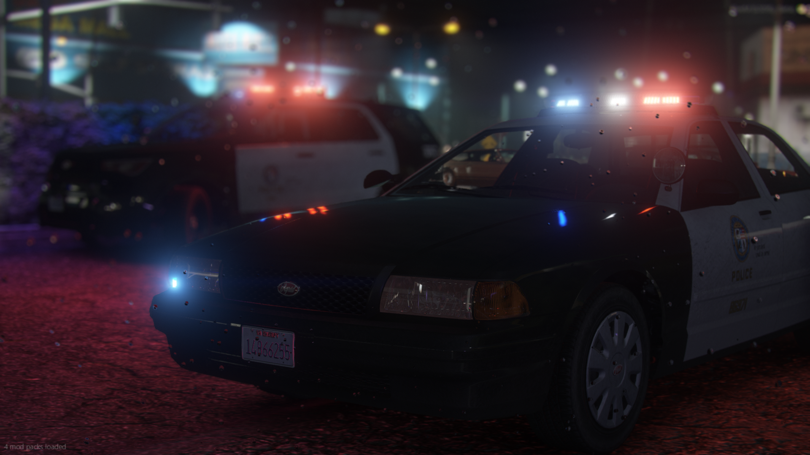
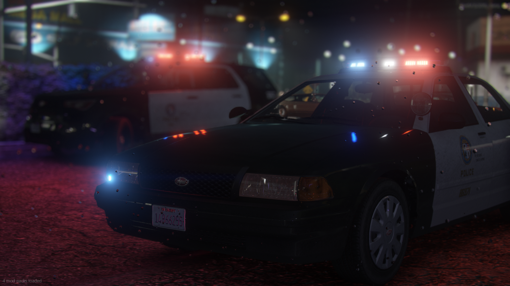
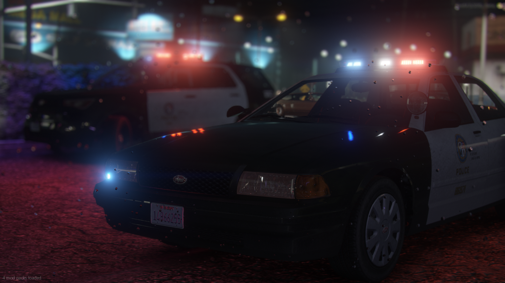

Community Media
Check out some of our Media Team's photos:
 
See our full gallery

See our full gallery
The creators of The Saints Roleplay and The Saints: 1998 are proud to present The Saints Roleplay 2.0, a completely overhauled, fresh, and immersive roleplaying experience! Dive into our QB-Core framework server, designed to offer a lore-friendly environment inspired by the vibrant and dynamic Greater Los Angeles area. Whether you're a seasoned roleplayer or just starting, this is the city where your story begins.
We are live 24/7, so the city never sleeps! Whether you're a night owl or an early riser, there’s always action waiting for you.
Our server thrives on two core principles:
Simply click the button below to join our Discord community, where you will get all the information you need to get started!
Our server is powered by QB-Core, one of the best frameworks for immersive GTA roleplay experiences.
No special mods are required to join, but make sure your FiveM client is up to date.
Check out some of our Media Team's photos:

See our full gallery
Our team is dedicated to providing the best experience for our community. Meet the people behind the scenes:
Max Stephens, LSPD Officer 1
Pablo Hernandez, PDM Owner
Ernest Dingleberry, Dynasty8 Branch Manager
Your story is waiting to be told, and the city is ready for you.
Click here to join our Discord!